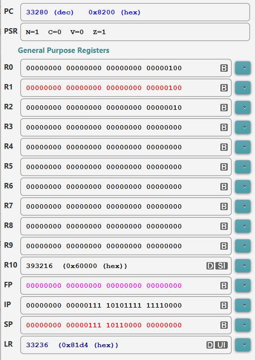
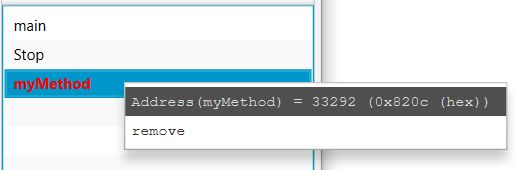
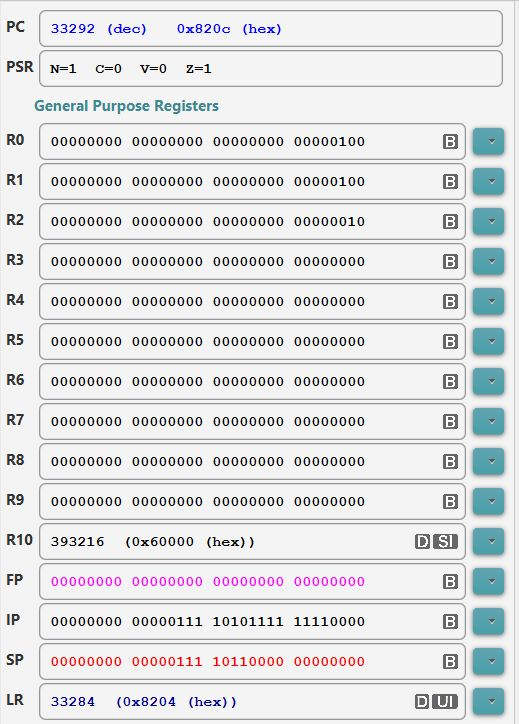

- Modern computer
typically
provides
2 assembler instructions
that user can use
to implement
methods:
- An assembler instruction that is used by the caller to invoke a method
- An assembler instruction that is used by the callee (= the called method) to return to its caller
- The branch and link
(bl
instruction in the
ARM processor is used
to
invoke (= call) a
method.
- Syntax of the
branch and link instruction:
bl label Effect: (1) Save the Program Counter (PC) in the Link Register (LR) (2) Branch to memory location marked by the label "label"Explanation:
- Recall that the
Program Counter (PC) contains
the address of the
next instruction that the
CPU will
fetch (and execute) after it processed
the current instruction in the
Instruction Register (IR)
In other words:
- PC contains the
location of the
instruction
following the
bl instruction:
Assembler program in memory: .... .... bl method <--- CPU currently executing the bl instruction next instr <--- The PC contains the address of this instruction ! ....
By saving the value in the PC (in the LR register), we have saved the return address that the invoked method must use to return back to its caller !!!
- PC contains the
location of the
instruction
following the
bl instruction:
- Recall that the
Program Counter (PC) contains
the address of the
next instruction that the
CPU will
fetch (and execute) after it processed
the current instruction in the
Instruction Register (IR)
- The retrurn address saved in the LR register is a "bread crump" - using the analogy of Hansel and Gretel....
- Consider the
following ARM assembler program:
main: mov r0, #1111 mov r1, #1111 bl myMethod mov r2, #2222 mov r3, #2222 myMethod: mov r8, #4444 mov r9, #4444I will use EGTAPI in class to show you the executing.
I have taken some snapshot of the execution for my notes.
The content of the registers at the moment the ARM processor executes the bl instruction is as follows:
 Notice that PC = 33280 which is the location of the "bl myMethod" instruction
The "bl myMethod" instruction will call (= run, jump) the myMethod function which is located at address 33292 as given by EGTAPI:
 When we click STEP and execute the "bl myMethod" in EGTAPI, we will see these values in the registers:
 Notice that:
- PC = 33292 - the program
made a jump to
the myMethod function
(So the instructions in the myMethod function will now be executed)
- Notice that
the LR register contains:
33284 !!!
- This is the address of the instruction that follows the "bl myMethod" instruction !!!
So the bl (branch and link) instruct has saved the return address in the lr register
- PC = 33292 - the program
made a jump to
the myMethod function
- Example Program:
(Demo above code)

- Prog file: /home/cs255001/demo/asm/8-sub/bl.s
How to run the program:
- To compile: as255 bl
- To run: use EGTAPI
- The Return from Subroutine
in the ARM processor can be
achieved using a
mov instruction
mov pc, lr Effect: Copy the return address saved by the bl instruction into the Program Counter (PC)Explanation:
- When you update the
PC (register) with
the retun address in the lr
register,
the ARM processor will
fetch the
next instruction at
the return address !!!
The effect of the mov pc, lr instruction is:
- Branch to the return address given in the lr register
- When you update the
PC (register) with
the retun address in the lr
register,
the ARM processor will
fetch the
next instruction at
the return address !!!
- Example:
main: mov r0, #4 mov r1, #4 bl myMethod mov r2, #4 mov r3, #4 bl myMethod mov r4, #4 mov r5, #4 myMethod: mov r10, #4 mov r9, #4 mov pc, lr // Return to caller !!!The main program calls the method myMethod twice.
In each call, the return address is saved in the lr register
So the mov pc, lr instruction in the myMethod function is able to jump back to the location where the function call took place !!!
- Example Program:
(Demo above code)
- Prog file: /home/cs255001/demo/asm/8-sub/bl+rts.s
How to run the program:
- To compile: as255 bl+rts
- To run: use EGTAPI
- Methods (or subroutines) in high level languages have very
nice syntax structures to highlight where the method
begins and ends...
Example:
public int myMethod ( int p1, int p2 ) { ... }You can see the method name and the curly braces { .. } that denote the start and the end of the method clearly
Methods (or subroutines) in assembler are nothing more than a series of instructions marked by a label
Example:
myMethod: ... ... (assembler instructions) ... mov pc, lrThe labels used to mark the beginning of functions/methods in assembler code are no different from the labels you used in if and while statements !!!
It's very hard to tell in assembler program which label to mark a method start location !!!
So it's a good practice to use comments, e.g.:
/* ************************************************** myMethod: this method wil do the following .... bla bla bla ... ************************************************** */ myMethod: ... ... (assembler instructions) ... mov pc, lr